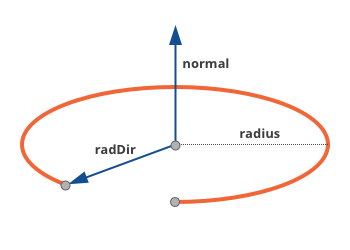

Arc¶
Represents a hole, represented as a circle.
Diagram
-
class
Arc¶ Bases:
geomagic.api.v3.swig.FeatureEvents
Name
Description
deleted
Triggered immediately before a DataObject is deleted.
updated
Published immediately after a DataObject’s data has been updated.
property_modified
Triggered when a property is changed. Args contains an attribute called “property” which is the property that changed.
Attributes
Name
Read only
Type
Range
Default Value
Description
name
No
stringThe name of the arc.
boundingBox
Yes
[-1.000000 -1.000000 0.000000] [1.000000 1.000000 0.000000]
The 3D dimensional bounds of the arc.
center
No
[0.00 0.00 0.00]
Center of the circle.
endAngle
No
double-6.283185 - 6.283185
6.283185
The end angle of the arc.
endPt
No
[0.00 0.00 0.00]
Property Documentation missing.
isClosed
Yes
boolTrue
The flag to indicate that the curve is closed or not.
isDegenerate
Yes
boolFalse
The flag to indicate that the curve is degenerate or not.
normal
No
[0.00 0.00 0.00]
The unit normal vector to the arc plane.
radialDir
Yes
[0.00 0.00 0.00]
Vector from center of plane to location of 0 radians angle along circle. Along with normal represents the coordinate system of the arc feature in 3D space.
radius
No
double0.000000 - +INF
1.000000
Distance from center of circle to point along the circle.
range
No
[0.00 6.28]
The parameter range over which the curve is defined.
startAngle
No
double-6.283185 - 6.283185
0.000000
Start of arc, in radians.
startPt
No
[0.00 0.00 0.00]
Property Documentation missing.
xAxis
No
[0.00 0.00 0.00]
The X-axis of the local coordinate system origined at the center point.
yAxis
Yes
[0.00 0.00 0.00]
The Y-axis of the local coordinate system origined at the center point.
Methods
-
__eq__(self, other)¶
-
__init__(self) → Arc¶
-
__ne__(self, other)¶
-
property
boundingBox¶
-
property
center¶
-
property
endAngle¶
-
property
endPt¶
-
evaluateCurvature(Arc self, double t) → Vector3D¶
-
evaluatePoint(Arc self, double t) → Vector3D¶
-
evaluateTangent(Arc self, double t) → Vector3D¶
-
getIGeoCurve(Arc self) → IGeoCurve const *const¶
-
initialize(Arc self, Vector3D center, double radius, Vector3D normal)¶ initialize(Arc self, Vector3D center, double radius, Vector3D normal, Vector3D radialDir)
-
property
isClosed¶
-
property
isDegenerate¶
-
isWithinArcRange(Arc self, Vector3D p) → bool¶
-
property
normal¶
-
property
radius¶
-
property
range¶
-
reverse(Arc self)¶
-
setIGeoCurve(Arc self, ::IGeoArc * arc)¶
-
property
startAngle¶
-
property
startPt¶
-
property
xAxis¶
-
property
yAxis¶
-
Examples
Creates a arc curve
from geomagic.api.v3 import *
# arcCurve creation
arc = Arc()
# set center point and the radius
center = Vector3D (0, 0, 0)
radius = 1.0
# set arc plane
normal = Vector3D (0, 0, 1)
xAxis = Vector3D (1, 0, 0)
# initialize
arc.initialize(center, radius, normal, xAxis)
#set the start and end angle
arc.startAngle = 0.0
arc.endAngle = 2 * math.pi